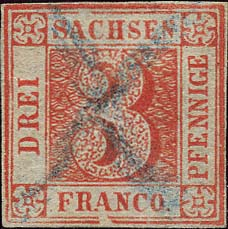
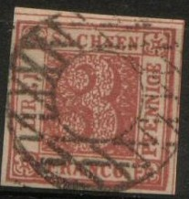
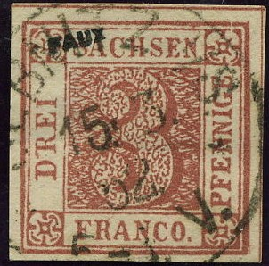
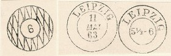
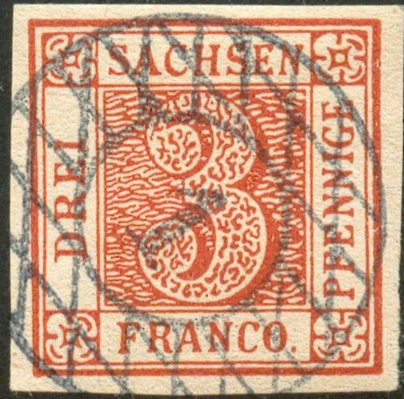
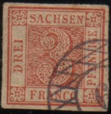

{kind=link}


Return To Catalogue - Saxony forgeries of the first issue, part 1 - part 3 - Sperati forgeries - Saxony forgeries of the first issue, Peter Winter forgeries - Saxony first two issues - Saxony other issues 1851 onwards - Other German States - Germany
Note: on my website many of the
pictures can not be seen! They are of course present in the cd's;
contact me if you want to purchase them.
Genuine stamps:

I think the first stamp above is a Fournier forgery. It has the same cancel
as in 'The Fournier Album of Philatelic Forgeries': "SEBNITZ
i/S 15 3 52 6-2 V". According to 'The Forged Stamps of all
Countries' by J.Dorn, the line under the word "DREI" is
interrupted below the start of the "R" and the
"I" (while in the genuine stamps, it is only
interrupted below the 'I').
Fournier based his forgery on a Oswald Schroeder forgery (made
between 1877 and 1880) with the same distinghuishing
characteristics. By the way, the Schroeder forgery is often
referred to as Engelhardt Fohl forgery
(it was produced on the order of Fohl, source 'Philatelic
Forgers, their Lives and Works' by Varro E. Tyler). The second
stamp is a Fournier forgery.

Other Fournier forgeries with a "SEBNITZ i/S 15 3 52"
or "SEBNITZ i/S 15 9 53" cancel. The first two have an
additional "FAUX" overprint (from the 'Fournier Album
of Philatelic Forgeries'). I've also seen a similar forgery with
a changed date: "SEBNITZ i/S 15 7 51 5-3 V." cancel.
Some of the cancels Fournier used on forgeries of Saxony (taken from a Fournier album), by the way, the above Sebnitz cancel does not seem to be in this album:

This forgery has the cancel 'LEIPZIG 5 1/2 -6'; it could be a
Fournier forgery.
Sheet of four forgeries, showing two different designs:
The first design (upper left and lower right stamp) show a peculiar top of the "R" of "DREI". The other two stamps (upper right and lower left) have some slanting lines in the frame below the "N" of "FRANCO". Below the block are shown three other forgeries with the same distinghuishing characteristics.
A whole sheet of these forgeries, consisting of 48 stamps (6 rows
of 8 stamps); however, the genuine sheets contained only 20
stamps!
Oswald Schroeder forgeries:
I've been told that these two stamps are Oswald Schroeder
forgeries.
These Schroeder forgeries are also sometimes
called Fohl forgeries, since they were
printed by Schroeder but ordered by Engelhardt Fohl from Dresden
from 1877 to 1880. Oswald Schroeder (Schröder) was part of the
A.Neumann and Schröder printing firm of Leipzig. In German they
are called Schrödersche Lichtdruckfälschung. The site
https://www.stampsx.com/ratgeber/ratgeber-sachsen.php, says that
these forgeries were printed in pairs (as shown above?). This
results in two types of Schroeder forgeries. In the upper
forgery, there are two tiny breaks in the inner frameline to the
left of the final "E" of "PFENNIGE". In the
bottom forgery, this line does not connect to the upper right
rosette.
V.E.Tyler in Philatelic Forgers, their lives and works, says that
the Schroeder forgery was printed in sheets of 17 (with two
tete-beche stamps). This information might be incorrect?
Other forgeries:
(Two forgeries on a letter)
Forgeries similar to the upper forgery in the above image.
The above forgeries appear to have been cut from the following 'reprint' sheet:
Note that each stamp has its own characteristics, missing
framelines, smudges etc.
The upper left forgery of the above sheet, pasted on a letter and
cancelled with a fantasy cancel. And another one, taken from
position 15 of the above sheet (3rd stamp in the last column);
note the missing left hand framelines.
Another forgery most likely from the same source.
 
Forgeries with first "S" of "SACHSEN"
different and "C" of "FRANCO" slanting. The
"G" of "PFENNIGE" is also different. Also
note the very thick upper right line in the upper right corner
design. It might have been made by Panelli
or Oneglia, since it is often offered
in batches of Panelli/Oneglia forgeries offered on Ebay from
Italy (2009). The patterns inside the large "3" are not
the same as in genuine stamps.
(Other deceptive forgery)
In my view, the serifs on the letters of "DREI" are too
small in these forgeries (last images, reduced sizes).
A photographic reproduction of 4 stamps
Modern reprint block of four stamps, note the very badly done
"C" in "SACHSEN".
Click here for Saxony, first issue forgeries, part 3
{kind=link}
{kind=link}
{kind=link}
{kind=link}